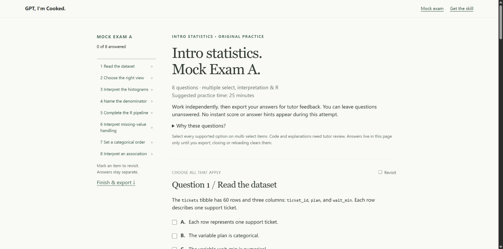

01 · Scope
Stay in your course.
Use supplied lectures and exam outlines. Flag missing teaching notes before introducing an unsupported method.
A study skill for college exams
Your course. Your weak spots.
A better next attempt.
Bring your notes and past papers. Build original practice, review your mistakes, and pick up where you left off.

Original statistics practice · no installation needed
Choose an exam-style webpage, focused practice, or a readable review guide. Every output follows the materials and learning evidence you provide.
01 · Scope
Use supplied lectures and exam outlines. Flag missing teaching notes before introducing an unsupported method.
02 · Attempt
Match supported instructor formats with original questions. Keep the key separate, then review your reasoning.
03 · Adapt
Save relevant difficulties and improvements in your study folder. Use that record to shape the next review.
The demo uses a fictional course packet and learning record. It illustrates the experience; it does not connect to an AI or save a permanent learning record.
Start with one useful file
Use $gpt-im-cooked to help me prepare for my midterm.
Here are my notes, exam outline, and practice papers.
Stay within these materials. Keep the answer key separate.
Save my difficulties and improvements in my study folder.Codex preview. File access enables saved progress; PDF and code execution depend on your host's tools.